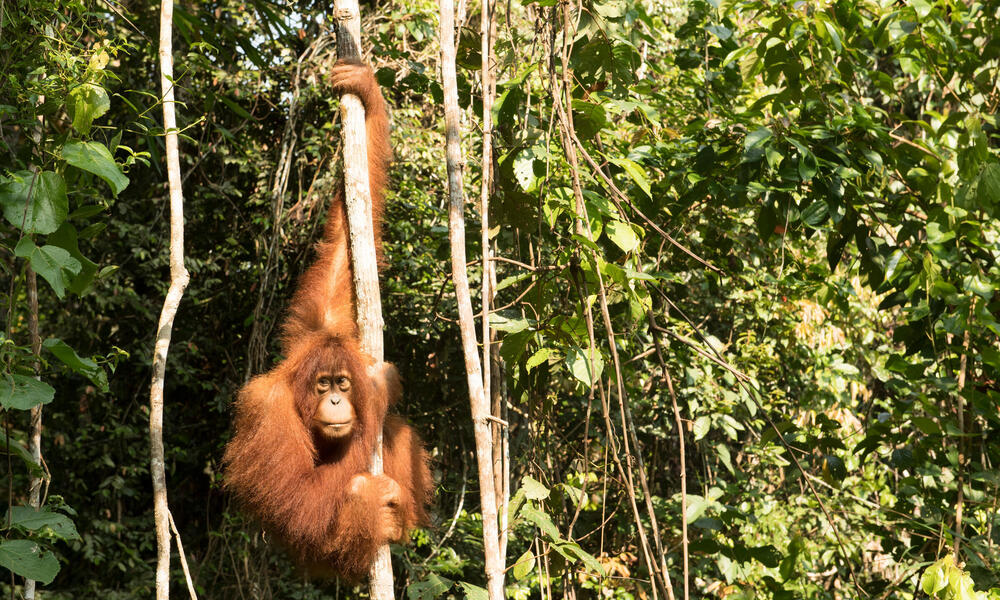

Los bosques tropicales son maravillas de la biodiversidad: en este tipo de bosque se encuentran más plantas y animales distintos que en cualquier otro lugar de la Tierra. Gracias a temperaturas superiores a los 65ºF (18ºC) durante todo el año y la abundancia de agua, casi cualquier criatura puede prosperar aquí.
